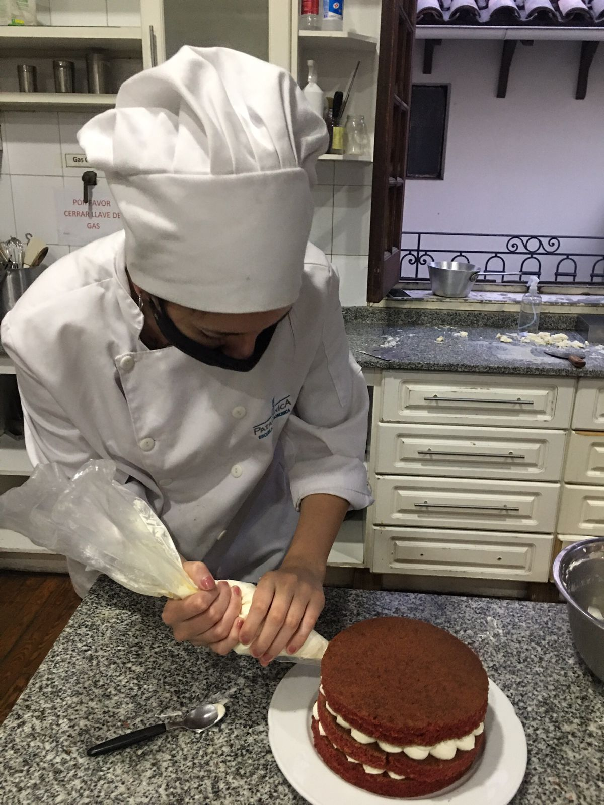

Soy Josefina Ruiz Cabello, nací una mañana del mes de Diciembre en la ciudad de Tucumán en el 1998. En el 2022 obtuve mi titulo de cocinara profesional en Escuela Patagonica. A continuación me especialicé como bartender y cursé estudios de Cocina Japonesa, entre otros. En el 2018, tras varias experiencias vividas y mensajes que me trajo la vida, tomé conciencia de las reacciones que provocan los alimentos en nuestro cuerpo. Tuve un llamado interno y empecé a hacer cambios en mi dieta, dejando de lado los alimentos refinados. Más tarde dejé de comer animales también. Cambié mi dieta y cambió mi vida. Está pagina la hago con el proposito que puedan encontrar recetas, trucos de cocina de todo tipo que puedan ayudar a su vida diaria